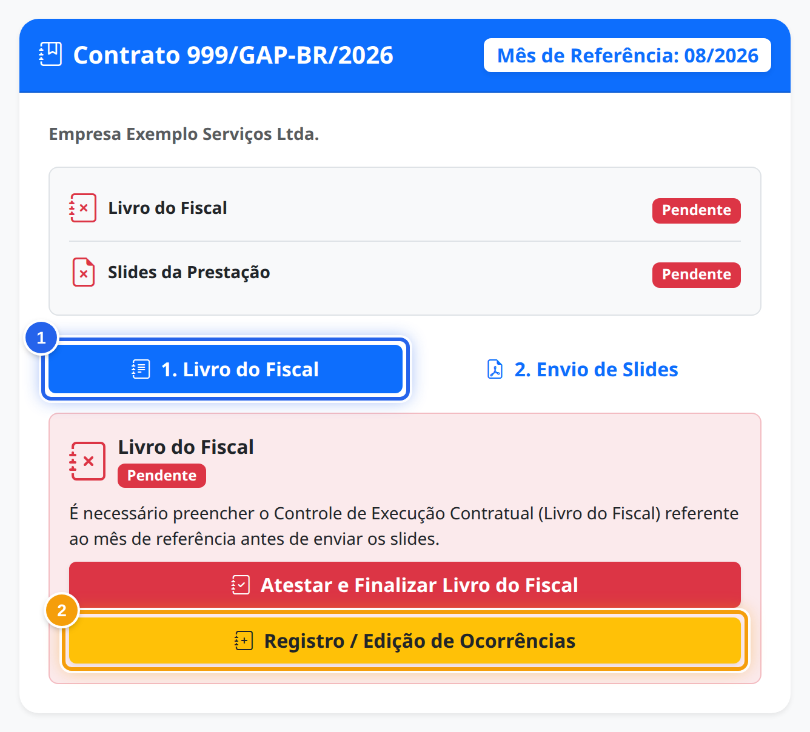
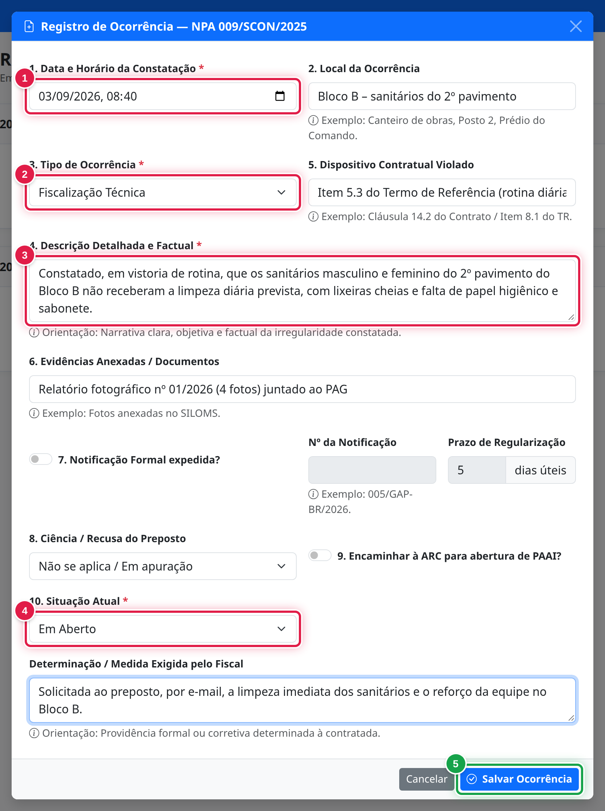
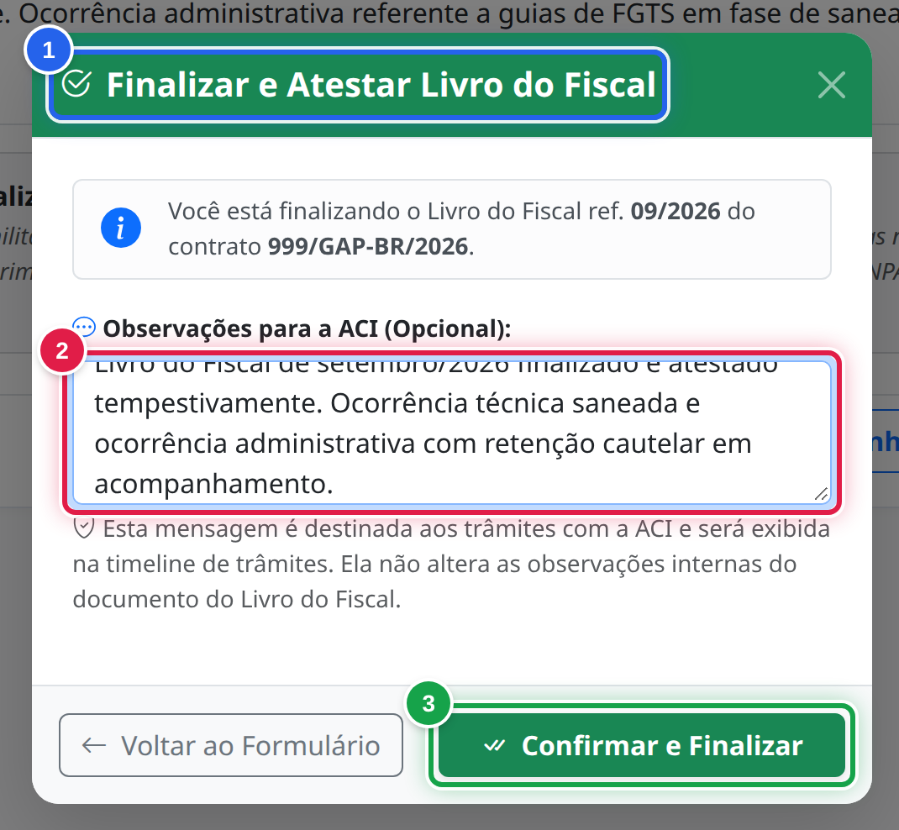

SISCONT · GUIA RÁPIDO
O essencial para registrar ocorrências, atestar o mês e acompanhar a conformidade.
Para fiscais de contrato · Lei nº 14.133/2021 e NPA 009/SCON/2025
NO DIA A DIA
Lance cada falha quando ela acontecer e atualize quando for corrigida.
NO MÊS SEGUINTE
Confira o mês encerrado e faça o ateste até a data-limite.
APÓS O ATESTE
Sem ocorrências e no prazo, o PDF sai na hora. Nos demais casos, aguarde a ACI. Depois, insira no SILOMS.
Registro e ateste no portal: sem planilha paralela e sem formatar arquivos.
Siscont · Livro do Fiscal · 2

No Portal de Prestação de Contas, vá à área dos fiscais e localize o seu contrato. No painel do contrato:
1
Ela mostra a situação do Livro no mês.
2
Este é o botão do dia a dia.
No fechamento, o botão será “Atestar e Finalizar Livro do Fiscal”.
Siscont · Livro do Fiscal · 3

Clique em “Adicionar Ocorrência” e preencha o essencial:
1
Quando constatou o fato. Data futura não é aceita.
2
Técnica, Administrativa ou outra opção da lista.
3
Relate o fato de forma clara e objetiva.
4
Em um registro novo, normalmente “Em Aberto”.
5
O sistema coloca o registro no mês certo pela data.
Siscont · Livro do Fiscal · 4
| Situação | Quando usar |
|---|---|
| Em Aberto | A falha foi constatada e ainda não foi tratada. |
| Em Saneamento | A empresa está corrigindo, no prazo de 5 dias úteis. |
| Resolvido | A empresa regularizou a falha. |
| Encaminhado para PAAI (ARC) | O caso seguiu para apuração de irregularidade. |
1. Clique no lápis azul da ocorrência
2. Altere a Situação Atual
3. Registre o que foi feito e salve
Siscont · Livro do Fiscal · 5
DURANTE O MÊS
Continue registrando. O Livro só pode ser salvo como rascunho.
A PARTIR DO DIA 1
O formulário do mês encerrado já traz as ocorrências lançadas.
ATÉ A DATA-LIMITE
A tela mostra a data. Geralmente é a mesma do envio dos slides.
Mês sem ocorrências? Marque “Sem ocorrências ou desvios no período (Em conformidade)”. No prazo, o Livro vai direto para a conformidade automática e o PDF sai na hora.
Siscont · Livro do Fiscal · 6

Confira as ocorrências, selecione o Fiscal Responsável, leia a declaração e clique em “Finalizar e Atestar Livro do Mês”.
1
Ela mostra o mês e o contrato do Livro.
2
Opcional. Não aparece na conformidade automática.
3
Segue para conformidade automática ou análise da ACI.
Siscont · Livro do Fiscal · 7
SE O STATUS FOR
Aguarde a análise da ACI. O Livro fica só para leitura. Para alterar, peça a devolução à ACI.
SE O STATUS FOR
Leia os apontamentos, clique em “Corrigir Livro do Fiscal”, ajuste e ateste de novo.
SE O STATUS FOR
Da ACI ou automática. Clique em “Baixar Livro do Fiscal (PDF)” e insira o documento no SILOMS.
Atenção: o fiscal só baixa o PDF depois da conformidade. Em todos os casos, insira-o no SILOMS, onde a ACI faz a validação e a homologação oficiais. A ACI pode devolver para correção um Livro em conformidade automática.
Siscont · Livro do Fiscal · 8
Registre a falha quando ela acontecer, sem acumular para o fim do mês.
A empresa corrigiu? Mude o registro para “Resolvido”.
Confira a data-limite na tela e não deixe o mês em aberto.
Use as observações do ateste para recados e esclarecimentos.
Dúvidas? Procure a Assessoria de Controle Interno (ACI) · 9